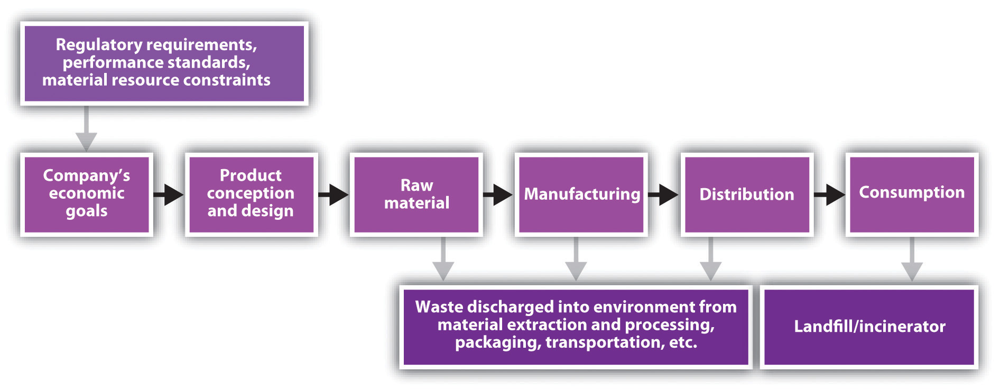
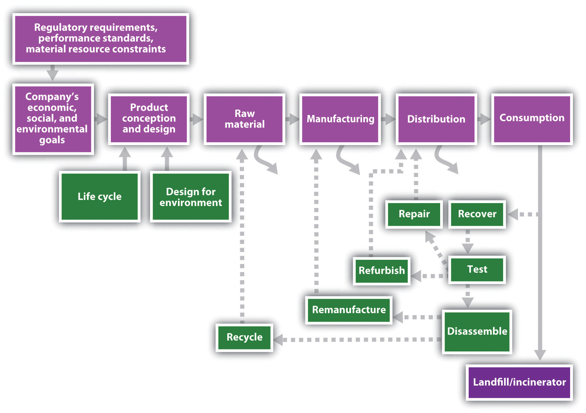

Regardless of how you might feel about Walmart, the effect of the company’s sustainability policies are being felt worldwide through its supply chains. On February 1, 2007, Walmart President and CEO Lee Scott announced his company’s “Sustainability 360” program would expand Walmart’s sustainability efforts from its operations and into its supply chains by “tak[ing] in,” as Scott said, “our entire company—our customer base, our supplier base, our associates, the products on our shelves, the communities we serve.”Walmart, “Wal-Mart CEO Lee Scott Unveils ‘Sustainability 360,’” news release, February 1, 2007, accessed January 10, 2011, http://walmartstores.com/pressroom/news/6237.aspx. Walmart customers could now track the company’s “Love, Earth” jewelry all the way back to the mine or buy fish certified by the Marine Stewardship Council. In 2010 the company announced the goal of a twenty-million-metric-ton greenhouse gas emission reduction from its global supply chain (encompassing over one hundred thousand suppliers).Walmart, “Sustainability Fact Sheet: Wal-Mart Takes the Lead on Environmental Sustainability,” news release, March 1, 2010, accessed January 30, 2011, http://walmartstores.com/download/2392.pdf. Furthermore, Walmart enlisted the nonprofit Carbon Disclosure Project, institutional investors with $41 trillion in assets as of September 2007, to help Walmart’s suppliers of DVDs, toothpaste, soap, milk, beer, vacuum cleaners, and soda to assess and reduce their carbon footprints.Ylan Q. Mui, “Wal-Mart Aims to Enlist Suppliers in Green Mission,” Washington Post, September 25, 2007, accessed January 10, 2011, http://www.washingtonpost.com/wp-dyn/content/article/2007/09/24/AR2007092401435.html. Indeed, with roughly one hundred thousand suppliers, two million employees, and millions of customers per day,Walmart, “Sustainability Fact Sheet: Wal-Mart Takes the Lead on Environmental Sustainability,” news release, March 1, 2010, accessed January 30, 2011, http://walmartstores.com/download/2392.pdf. Walmart’s operations and those it encouraged, from product design and resource extraction through final consumption and disposal, could massively influence societies and the natural environment. As such impacts attracted attention, so did the benefits of and the need for greener supply networks.
Green supply chains (GSCs)Approaches to sourcing and production that consider sustainability for every participant at every step, from design to manufacture, transportation, storage, and use to eventual disposal or recycling. became Supply Chain Digest’s number one supply-chain trend of 2006 as more companies such as Walmart embraced them.Dan Gilmore, “Top Ten Supply Chain Trends of 2006,” Supply Chain Digest, January 4, 2006, accessed January 10, 2011, http://www.scdigest.com/assets/FirstThoughts/07-01-04.cfm?cid=871&ctype=content. Fully developed green supply chains consider sustainability for every participant at every step, from design to manufacture, transportation, storage, and use to eventual disposal or recycling. This attentiveness would reduce waste, mitigate legal and environmental risks, minimize and possibly eliminate adverse health impacts throughout the value-added process, improve the reputations of companies and their products (enhancing brands), and enable compliance with increasingly stringent regulations and societal expectations. Thus GSCs offer the opportunity to boost efficiency, value, and access to markets through improving a company’s environmental, social, and economic performance.
Figure 6.1 The Conventional Supply Chain
In its simplest form, a conventional supply chain assumes that firms take raw materials at the beginning of the supply chain and transform them into a product at the end of the supply chain. Ultimately, the supply chain terminates at the point of the final buyer purchasing and using the product (see Figure 6.1 "The Conventional Supply Chain"). Vertical integration absorbs steps in the supply chain within a single corporation that conducts exchange through internal transfer pricing agreements. Disaggregation maintains ownership in discrete businesses that determine prices through market-based transactions.
A company that sells a final product must meet certain requirements and interact with suppliers, third-party logistics providers, and other stakeholder groups that can influence the entire process. Each institution tries to shape the supply chain to its own advantage. As the product moves from design to consumption (black arrows), waste and other problems (gray arrows) accrue. Whether those problems are unfair wages, deforestation, or air pollution, these costs are not necessarily reflected in the price of the finished product but are instead externalized to the public in some fashion or expected to be borne by intermediate links in the conventional chain.
While the term supply chain implies a one-way, linear relationship among participants (e.g., from concept, to resource extraction, to processing, to component manufacturing, to system integration, to final assembly, etc.), the chain is more accurately described as a network of individuals and organizations. Managing such networks can become quite complex, especially as they sprawl over more of the globe. Conventional supply-chain management plans, implements, and controls the operations of the supply chain as efficiently as possible—typically, however, from a limited vantage point that ignores and externalizes many costs.
In contrast, a green supply chain takes a broader, systems view that internalizes some of these costs and ultimately turns them into sources of value. Green supply chains thus modify conventional supply chains in two significant ways: they increase sustainability and efficiency in the existing forward supply chain and add an entirely new reverse supply chain (see Figure 6.2 "The Green Supply Chain").
Figure 6.2 The Green Supply Chain
A company can select various ways to improve the sustainability of its logistics systems. The company may communicate sustainability standards backward to suppliers and require them to adopt environmental management systems or certifications, such as ISO 14001; survey and monitor suppliers’ current practices or products for their sustainability and offer training, technology, and incentives to improve those practices or products;According to the International Organization for Standardization, which established this qualification, ISO 14001 “gives the requirements for quality management systems [and] is now firmly established as the globally implemented standard for providing assurance about the ability to satisfy quality requirements and to enhance customer satisfaction in supplier–customer relationships.” International Organization for Standardization, “ISO 14001:2004,” accessed January 10, 2011, http://www.iso.org/iso/iso_catalogue/catalogue_tc/catalogue_detail.htm?csnumber=31807. require suppliers to avoid certain hazardous ingredients and label others; and/or ask suppliers and other supporting firms, such as transportation companies, to suggest ways to improve the efficiency and sustainability of the whole process. Hence companies “greening” their supply chains are likely to communicate and collaborate more with suppliers and subcontractors to innovate and find the best solutions. They might also reach out to nongovernmental organizations (NGOs) and government agencies for further assistance.
For example, US-based DesignTex, in the 1990s a leader in the contract textile industry and now a subsidiary of US commercial furniture manufacturer Steelcase,DesignTex, “Designtex, A Steelcase Company: Our Company,” accessed January 30, 2011, http://store.designtex.com/ourcompany.aspx?f=35398. chose to pursue an environmentally friendly commercial upholstery fabric. DesignTex collaborated with a small Swiss firm called Rohner Textil AG, chemical corporation Ciba Geigy, and the Environmental Protection Encouragement Agency (a German NGO) to determine product specifications, develop fabric requirements, and identify substitute benign chemicals for the toxic chemicals present along the fabric supply chain.Matthew M. Mehalik, “Sustainable Network Design: A Commercial Fabric Case Study,” Interfaces: International Journal of the Institute for Operations Research and the Management Sciences 30, no. 3 (May/June 2000): 180–89. The new product’s supply chain originated from the wool of free-range sheep and ramie grown without pesticides to a yarn-twisting mill and dye manufacturers, with scraps of the textile generated along the way being sold to farmers and gardeners for mulch.
Surprisingly, the production changes did not just reduce DesignTex’s environmental impact; they also added value: The factory’s effluent became cleaner than the incoming water supply. Regulatory paperwork was eliminated. Workers no longer needed protective masks or gloves, which eliminated health risks and liability exposure.William McDonough and Michael Braungart, “Waste Equals Food,” in Cradle to Cradle: Remaking the Way We Make Things (New York: North Point Press, 2002). Because of these decreased costs and the tax relief for the accompanying environmental investments, the innovation showed a payback period of only five years.Matthew M. Mehalik, “Sustainable Network Design: A Commercial Fabric Case Study,” Interfaces: International Journal of the Institute for Operations Research and the Management Sciences 30, no. 3 (May/June 2000): 180–89. It also was an early, successful illustration of cradle-to-cradle design, the cyclical design protocol that allows biologically benign products to safely return to nature.
In addition to dramatically improving conventional supply-chain logistics, green supply chains extend past the point of product use, where conventional chains end, and consider how to recover and reuse materials—questions of reverse logisticsThe part of the supply chain that takes used products from consumers and recycles, refurbishes, or otherwise disposes of those products.. Many companies already have rudimentary reverse logistics systems to deal with customers’ returns of items they do not want or that were found defective or otherwise unsatisfactory. An expanded reverse logistics system would ultimately replace the linearity of most production methods—raw materials, to processing, to further conversions and modification, to ultimate product, to use, to disposal—with a cradle-to-cradle, cyclical path or closed loop that begins with the return of used, outmoded, out-of-fashion, and otherwise “consumed” products. The products are either recycled and placed back into the manufacturing stream or broken down into compostable materials. The cycle is never ending because materials return to the land in safe molecular structures (taken up and used by organisms as biological nutrients) or are perpetually used within the economy as input for new products (technical nutrients).
Companies typically funnel spent items from consumers into the reverse supply chain by leasing their products or providing collection points or by other means of recovering the items once their service life ends.Shad Dowlatshahi, “Developing a Theory of Reverse Logistics,” Interfaces: International Journal of the Institute for Operations Research and the Management Sciences 30, no. 3 (May/June 2000): 143–55. For example, Canon and Xerox provide free shipping to return used toner cartridges and have thus collectively recovered over one hundred thousand tons of ink and cartridges since 1990.Canon, “Toner Cartridge Return Program,” accessed October 2, 2009, http://www.usa.canon.com/templatedata/AboutCanon/ciwencrpr.html; Xerox, “Prevent and Manage Waste,” accessed January 10, 2011, http://www.xerox.com/about-xerox/recycling/supplies/enus.html.
Once collected, whether by the original manufacturer or a third party, the products could be inspected and sorted. Some items might return quickly to the supply chain with only minimal repair or replacement of certain components, whereas other products might need to be disassembled, remanufactured, or cannibalized for salvageable parts while the remnant is recycled or sent to a landfill or incinerator. “Companies that remanufacture are estimated to save 40–60 percent of the cost of manufacturing a completely new product…while requiring only 20 percent of the effort,” leading to significant, structural savings, wrote Shad Dowlatshahi in Interfaces.Shad Dowlatshahi, “Developing a Theory of Reverse Logistics,” Interfaces: International Journal of the Institute for Operations Research and the Management Sciences 30, no. 3 (May/June 2000): 144. Moreover, the reverse supply chain might spawn new suppliers as well as other sources of revenue for companies that engage in collection, disassembly, and so on, making the entire network more efficient.Joy M. Field and Robert P. Sroufe, “The Use of Recycled Materials in Manufacturing: Implications for Supply Chain Management and Operations Strategy,” International Journal of Production Research 45, no. 18–19 (October 2007): 4439–63. This concept of an eco-efficient closed loop thereby makes green supply chains a central piece of sustainable industrial ecosystems.
The same techniques that improve the sustainability of conventional logistics also aid reverse logistics. In addition, green supply chains fundamentally require two tools: life-cycle assessment (LCA) and design for environment (DfE). According to the US Environmental Protection Agency’s National Risk Management Research Laboratory, LCA takes the viewpoint of a product, process, or service by “(1) compiling an inventory of relevant energy and material inputs and environmental releases; (2) evaluating the potential environmental impacts associated with identified inputs and releases; [and] (3) interpreting the results to help you make an informed decision,” typically to minimize negative impacts across the entire life of the product.US Environmental Protection Agency, “Life-Cycle Assessment (LCA),” accessed January 10, 2011, http://www.epa.gov/ORD/NRMRL/lcaccess. For examples, see Maurizio Bevilacqua, Filippo Emanuele Ciarapica, and Giancarlo Giacchetta, “Development of a Sustainable Product Lifecycle in Manufacturing Firms: A Case Study,” International Journal of Production Research 45, no. 18–19 (2007): 4073–98, as well as Stelvia Matos and Jeremy Hall, “Integrating Sustainable Development in the Supply Chain: The Case of Life Cycle Assessment in Oil and Gas and Agricultural Biotechnology,” Journal of Operations Management 25, no. 6 (2007): 1083–82. This analysis helps identify the points in the green supply chain that detract from ultimate sustainability and establishes a baseline for improvement. For example, Walmart’s third-party logistics provider in Canada began using railways more than roads to supply ten stores, thereby cutting carbon emissions by 2,600 tons. The company estimated it would save another $4.5 million and prevent 1,400 tons of waste annually by switching from cardboard to plastic shipping crates.“Wal-Mart’s ‘Green’ Campaign Pays Off in Canada,” DC Velocity, October 1, 2007, accessed October 2, 2009, http://www.dcvelocity.com/news/?article_id=1338.
Application of DfE acknowledges that design determines a product’s materials and the processes by which the product is made, shipped, used, and recovered. Hence DfE could be used to avoid toxic materials from the outset; minimize energy and material inputs; and facilitate disassembly, repair, and remanufacturing. For instance, Hewlett Packard (HP) used DfE “product stewards,” whose role, HP explained, was as follows: “[Product stewards] are integrated into product design and research and development teams to identify, prioritize, and recommend environmental design innovations to make products easier to disassemble and recycle. Such features include modular designs, snap-in features that eliminate the need for glues and adhesives, fewer materials, and molded-in colors and finishes instead of paint, coatings, or plating.”Hewlett-Packard, “HP to Eliminate Brominated Flame Retardants from External Case Parts of All New HP Brand Products,” news release, November 1, 2005, accessed January 11, 2011, http://www.hp.com/hpinfo/newsroom/press/2005/051101a.html.
Conversely, process designs could influence product designs through new technology that implements an innovative idea. For example, in the Walden Paddlers case discussed in Section 4.5 "Adaptive Collaboration through Value-Added Networks", Hardigg Industries was a plastics-molding company that partnered with Clearvue Plastics to create plastic pellets with 50 percent recycled content, which Hardigg thought was impossible until it was encouraged by the entrepreneurial founder of Walden Paddlers. Later, Hardigg was able to change its rotomolding technology to allow for the use of 100 percent recycled resins. Through the use of recycled materials and Clearvue’s innovation, Hardigg was able to lower costs, establish a competitive advantage within its industry, attract new customers, and increase customer satisfaction.Paul H. Farrow, Richard R. Johnson, and Andrea L. Larson, “Entrepreneurship, Innovation, and Sustainability Strategies at Walden Paddlers, Inc.,” Interfaces: International Journal of the Institute for Operations Research and the Management Sciences 30, no. 3 (May/June 2000): 215–25.
Although green supply chains could present novel challenges, they had spread to address a convergence of legal requirements, consumer expectations, and competition for continued profitability. In 2001, a study of twenty-five suppliers showed 80 percent received significant requests to improve the environmental quality of their operations and products, and they in turn asked their suppliers to do the same.Business for Social Responsibility Education Fund, Suppliers’ Perspectives on Greening the Supply Chain (San Francisco: Business for Social Responsibility Education Fund, 2001), accessed January 11, 2011, http://www.getf.org/file/toolmanager/O16F15429.pdf. A larger survey from 2008 indicated 82 percent of respondents were planning to implement or were already implementing green supply-chain management strategies.Walfried M. Lassar and Adrian Gonzalez, The State of Green Supply Chain Management: Survey Results (Miami, FL: Ryder Center for Supply Chain Management, Florida International University, 2008), accessed January 11, 2011, http://grci.calpoly.edu/projects/sustaincommworld/pdfs/WP_Florida_Supply_Chain_Mgmt.pdf. The trend toward green supply chains was expected to continue.
Concern for green supply-chain topics emerged in the 1990s as, on one hand, globalization and outsourcing made supply networks increasingly complex and diverse and, on the other hand, new laws and consumer expectations increasingly demanded that companies take more responsibility for their products across the entire life of those products.Jonathan D. Linton, Robert Klassen, and Vaidyanathan Jayaraman, “Sustainable Supply Chains: An Introduction,” Journal of Operations Management 25, no. 6 (November 2007): 1075–82; Going Green Upstream: The Promise of Supplier Environmental Management (Washington, DC: National Environmental Education and Training Foundation, 2001), accessed January 11, 2011, http://www.neefusa.org/pdf/SupplyChainStudy.pdf. Companies had to more closely monitor their suppliers. Total quality management and conventional supply-chain management adapted to address some of these challenges in “a paradigm shift [that] occurred when the scope of analysis was broadened beyond what was customary [for operations analysts] at the time.”Charles J. Corbett and Robert D. Klassen, “Expanding the Horizons: Environmental Excellence as Key to Improving Operations,” Manufacturing and Service Operations Management 8, no. 1 (Winter 2006): 5–22. These broader management practices and ISO 9001 in turn laid the foundation for green supply-chain management and ISO 14001.
Between 2000 and 2009, the increased emphasis on sustainability expanded the scope further and deeper into environmental, public health, and community/social issues and embraced stakeholders beyond consumers and investors.Charles J. Corbett and Robert D. Klassen, “Expanding the Horizons: Environmental Excellence as Key to Improving Operations,” Manufacturing and Service Operations Management 8, no. 1 (Winter 2006): 5–22. This new paradigm of “extended producer responsibility,” which included a call for greater transparency and accountability, also compelled companies toward green supply-chain design.Markus Klausner and Chris T. Hendrickson, “Reverse-Logistics Strategy for Product Take-Back,” Interfaces: International Journal of the Institute for Operations Research and the Management Sciences 30, no. 3 (May/June 2000): 156–65.
Laws to reduce human exposure to hazardous and toxic chemicals drive corporate attention to supply-chain materials use. Noncompliance with laws could hurt profits, market share, and brand image. For example, Dutch customs agents prevented approximately $160 million worth of Sony PlayStation consoles from entering Holland in December 2001 because cadmium levels in their wiring exceeded levels set by Dutch law.Adam Aston, Andy Reinhardt, and Rachel Tiplady, “Europe’s Push for Less-Toxic Tech,” BusinessWeek, August 9, 2005, accessed January 11, 2011, http://www.businessweek.com/technology/content/aug2005/tc2005089_9729 _tc_215.htm. Sony disputed the root cause with its Taiwanese cable supplier but nonetheless had to pay to store, refurbish, and repack the machines.
Most forward-thinking global firms moved toward adopting consistent standards across all their markets, as opposed to different standards for different countries. Hence the tightest rules from one place tended to become the de facto global standard. For example, the EU’s directives 2002/95/EC on “the Restriction of the Use of certain Hazardous Substances in Electrical and Electronic Equipment” (RoHS) and 2002/96/EC on “Waste Electrical and Electronic Equipment” (WEEE) had many ramifications for suppliers and producers in the electronics industry. RoHS required all manufacturers of electronics and electrical equipment sold in Europe by July 2006 to substitute safer materials for six hazardous substances, such as lead and chromium. WEEE required producers to collect their electronic waste from consumers free of charge.European Commission, “Environment: Waste Electrical and Electronic Equipment,” accessed January 11, 2011, http://ec.europa.eu/environment/waste/weee/index_en.htm. The EU’s 2006 directive on “Registration, Evaluation, Authorization, and Restriction of Chemicals” (REACH) might further tighten global standards for producers and suppliers because it “gives greater responsibility to industry to manage the risks from chemicals and to provide safety information on the substances.”European Commission, “Environment: REACH,” accessed January 11, 2011, http://ec.europa.eu/environment/chemicals/reach/reach_intro.htm. Similar efforts have begun in Asia with Japan’s Green Procurement rules and China’s Agenda 21 goals.Adam Aston, Andy Reinhardt, and Rachel Tiplady, “Europe’s Push for Less-Toxic Tech,” BusinessWeek, August 9, 2005, accessed January 11, 2011, http://www.businessweek.com/technology/content/aug2005/tc2005089_9729 _tc_215.htm.
Consumers and institutional investors, meanwhile, have exerted pressure on companies through a variety of tactics from socially responsible investment screening criteria to market campaigns for engaging in fair trade or ending sweatshop labor. Failure to publicly improve practices anywhere along the supply chain could hurt brand image and curtail access to markets. American universities and colleges founded the Worker Rights Consortium in 2000 “to assist universities with the enforcement of their labor rights codes of conduct, which were adopted to protect the rights of workers producing apparel and other goods bearing university names and logos.”Worker Rights Consortium, “Mission: History,” accessed October 2, 2009, http://www.workersrights.org/about/history.asp. Manufacturers such as Canada’s Hudson Bay Company began to audit suppliers’ factories for compliance with labor standards.Tim Reeve and Jasper Steinhausen, “Sustainable Suppliers, Sustainable Markets,” CMA Management 81, no. 2 (April 2007): 30–33. By 2005, the Investor Environmental Health Network, following the effective strategy of institutional investors negotiating with companies for more action and accountability on climate change, was encouraging investment managers and corporations to reduce high-risk toxic chemicals used in their products and used by companies in which they invest.
Businesses might face novel challenges when implementing, operating, or auditing green supply chains. Given these challenges, businesses that already used an environmental management system were more equipped to build a green supply chain.Nicole Darnall, G. Jason Jolley, and Robert Handfield, “Environmental Management Systems and Green Supply Chain Management: Compliments for Sustainability?” Business Strategy and the Environment 17, no. 1 (2008): 30–45; Toshi H. Arimura, Nicole Darnall, and Hajime Katayama, Is ISO-14001 a Gateway to More Advanced Voluntary Action? A Case for Green Supply Chain Management, RFF DP 09-05 (Washington, DC: Resources for the Future, 2009), accessed January 11, 2011, http://www.rff.org/documents/rff-dp-09-05.pdf. Nonetheless, all businesses could take steps to green their chains.
“Green” has become strategic. When sustainability is recognized as an operating and strategic opportunity, as in the cases of General Electric and Walmart, senior management supports green supply-chain initiatives and integrates them into the business’s core capabilities.Terry F. Yosie, Greening the Supply Chain in Emerging Markets: Some Lessons from the Field (Oakland, CA: GreenBiz, 2008), accessed January 11, 2011, http://www.greenbiz.com/sites/default/files/document/GreenBiz_Report_Greening _the_Supply_Chain.pdf; Samir K. Srivastava, “Green Supply-Chain Management: A State-of-the-Art Literature Review,” International Journal of Management Reviews 9, no. 1 (March 2007): 53–80. In 2010, however, authority over green supply chains still tended to be held by a variety of groups, such as supply-chain managers, environmental health and safety offices, and sustainability divisions.Walfried M. Lassar and Adrian Gonzalez, The State of Green Supply Chain Management: Survey Results (Miami, FL: Ryder Center for Supply Chain Management, Florida International University, 2008), accessed January 11, 2011, http://grci.calpoly.edu/projects/sustaincommworld/pdfs/WP_Florida_Supply_Chain_Mgmt.pdf. Personnel who might have once functioned separately within a company often had to collaborate and create new teams for green supply chains to work effectively, and those people needed time for the green supply chains to yield their maximum benefits.
Companies must actively include suppliers and service providers in greening supply chains so that they can build trust, lend their own expertise to increase sustainability, and receive adequate guidance and assistance in improving their operations.Mark P. Sharfman, Teresa M. Shaft, and Robert P. Anex Jr., “The Road to Cooperative Supply-Chain Environmental Management: Trust and Uncertainty among Pro-active Firms,” Business Strategy and the Environment 18, no. 1 (January 2009): 1–13. Businesses must state clear and reasonable expectations and allow sufficient lead time for suppliers to respond. They must also be willing to listen to suppliers.Business for Social Responsibility Education Fund, Suppliers’ Perspectives on Greening the Supply Chain (San Francisco: Business for Social Responsibility Education Fund, 2001), accessed January 11, 2011, http://www.getf.org/file/toolmanager/O16F15429.pdf. Furthermore, companies cannot simply issue guidelines from their headquarters; their representatives must instead be available on the ground and cooperating with local contacts to ensure results and prevent increased competition within the supply chain.Terry F. Yosie, Greening the Supply Chain in Emerging Markets: Some Lessons from the Field (Oakland, CA: GreenBiz, 2008), accessed January 11, 2011, http://www.greenbiz.com/sites/default/files/document/GreenBiz_Report_Greening _the_Supply_Chain.pdf. Indeed, suppliers need incentives and assurance that their share of the profit will be protected if they innovate to improve the process because maximizing the overall value of the supply chain may reduce value for individual links.Jonathan D. Linton, Robert Klassen, and Vaidyanathan Jayaraman, “Sustainable Supply Chains: An Introduction,” Journal of Operations Management 25, no. 6 (November 2007): 1078. For example, a design for disassembly that relies on pieces that snap together may obviate the need for suppliers of adhesives, even if it may create demand for disassembly and remanufacturing services.
Reverse supply chains complicate the overall supply chain, and therefore they need to be carefully crafted and considered in overall product design, production, and distribution. Materials and components recovered from used products need to reenter the same forward supply chain as new materials or components. Hence companies must recover items efficiently, train employees or subcontractors to assess properly the condition of a recovered item and what is salvageable and what is not, and manage their inventory to even out variation in the rate and quality of returned items.V. Daniel R. Guide Jr., Vaidyanathan Jayaraman, Rajesh Srivastava, and W. C. Benton, “Supply-Chain Management for Recoverable Manufacturing Systems,” Interfaces: International Journal of the Institute for Operations Research and the Management Sciences 30, no. 3 (May/June 2000): 125–42; also Nils Rudi, David F. Pyke, and Per Olav Sporsheim, “Product Recovery at the Norwegian National Insurance Administration,” Interfaces: International Journal of the Institute for Operations Research and the Management Sciences 30, no. 3 (May/June 2000): 166–79. They must also balance the availability of salvaged components or recycled materials with the need for new components or materials, especially as certain proprietary parts become unavailable or production processes change. In cases when consumers may want the same item they had before with only minor changes, such as a vehicle, businesses will also have to track individual pieces through disassembly and refurbishment.V. Daniel R. Guide Jr., Vaidyanathan Jayaraman, Rajesh Srivastava, and W. C. Benton, “Supply-Chain Management for Recoverable Manufacturing Systems,” Interfaces: International Journal of the Institute for Operations Research and the Management Sciences 30, no. 3 (May/June 2000): 125–42.
After establishing a green supply chain, companies need to assess its performance. In their 2008 survey of seventy supply-chain executives, Lassar and Gonzalez noted, “Almost 40 percent of the 56 firms that are active with green activities do not have any metrics to measure green/sustainability results in their firms.”Walfried M. Lassar and Adrian Gonzalez, The State of Green Supply Chain Management: Survey Results (Miami, FL: Ryder Center for Supply Chain Management, Florida International University, 2008), accessed January 11, 2011, http://grci.calpoly.edu/projects/sustaincommworld/pdfs/WP_Florida_Supply_Chain_Mgmt.pdf. Companies with metrics tracked quantities such as fuel use, packaging, and so on. Another study corroborates this trend: what metrics companies do have tend to cluster around eco-efficiency indicators, such as packaging used or miles traveled, likely because those are the easiest to observe, quantify, and associate with specific actions.Vesela Veleva, Maureen Hart, Tim Greiner, and Cathy Crumbley, “Indicators for Measuring Environmental Sustainability,” Benchmarking 10, no. 2 (2003): 107–19. Companies can, however, include broader measures such as customer satisfaction. However, even then a company may fall short. A systems, health-oriented, and green approach to design does not always work. Some view Frito-Lay’s SunChips compostable bag (offered to the market consistent with biodegradable bags being the fastest growing segment in packaging) as having failed due to its loud noise when handled. Since the crinkling of the bags at up to eighty-five decibels is comparable to glass breaking or an engine revving, the company has gone back to the drawing board with this packaging design.
Finally, green supply chains had to overcome institutional inertia and confusion. First, large companies with financial and political resources tended to resist change, especially at the outset, because of the large capital and infrastructural investments in the status quo. Walmart’s green initiative, however, appears to be the turning point that moves other large enterprises toward green supply chains.
Second, in 2009, no official criteria defined a green supply chain. Standards such as ISO 14000 usually focus on a single entity and not the supply chain, while legal requirements often focus on products and ingredients. ISO 14001, the core voluntary set of standards, is used by firms to design an environmental management system that provides internal monitoring and provides practices, procedures, and tools for systematic efforts to improve performance. However, nothing defines how much of the supply chain is required to have ISO 14000 or other certifications to qualify for the green supply chain label. When Home Depot solicited its suppliers for candidates to its Eco Options marketing campaign, one manufacturer praised the plastic handles of its paintbrushes as more environmentally sensitive than wooden handles, while another praised the wooden handles of its paintbrushes as environmentally better than plastic.Clifford Krauss, “At Home Depot, How Green Is That Chainsaw?” New York Times, June 25, 2007, accessed January 11, 2011, http://www.nytimes.com/2007/06/25/business/25depot.html?_r=1.
The lack of standards could promote individual certification programs, such as the cradle-to-cradle certification provided by McDonough Braungart Design Chemistry, LLC, which implies a corresponding green supply chain. This program, however, is private, largely to protect the confidential business information of its clients to ensure their cooperation, and has therefore been criticized for its lack of transparency.Danielle Sacks, “Green Guru William McDonough Must Change, Demand His Biggest Fans,” Fast Company, February 26, 2009, accessed January 11, 2011, http://www.fastcompany.com/blog/danielle-sacks/ad-verse-effect/william -mcdonough-must-change; Diana den Held, “‘Criticism on Cradle to Cradle? Right on Schedule,’ Says Michael Braungart,” Duurzaam Gebouwd (blog), March 20, 2009, accessed October 2, 2009, http://www.duurzaamgebouwd.nl/index.php?pageID=3946&messageID=1936. However, the cradle-to-cradle approach is now being explored in California as a statewide system to encourage safer, less polluting design protocols. In the worst cases, vague standards or opaque processes can lead to charges of “greenwashing,” or exaggerating or fabricating environmental credentials.Melissa Whellams and Chris MacDonald, “What Is Greenwashing, and Why Is It a Problem?” Business Ethics, accessed October 2, 2009, http://www.businessethics.ca/greenwashing. Greenwashing distracts people who are serious about taking care of the environment with counterproductive activities, misinforms the public, and undermines the credibility of more substantial initiatives of others.
Nonetheless, resistance to change and lack of an official definition reflect extrinsic problems rather than problems intrinsic to the mechanics of green supply chains. Such problems are more about marketing than about function. As green supply chains prove themselves through superior performance, they will likely become more studied, better understood and defined, and more widely spread. Good starting points for firms that understand these issues as strategic are to look at the inherent risks of not examining their supply chains and to envision a future market position in which a green, differentiated product and brand will grow revenues.
Green supply chains yield a wide range of benefits. They can reduce a company’s negative environmental or social impact, decrease operating costs, increase customer service and sales, promote innovation, and mitigate regulatory risk. The most immediate benefits of green supply chains are reduced environmental harm and operations costs. For example, Fuji Xerox adopted a cradle-to-cradle philosophy that emphasized supporting document services over a life cycle rather than selling photocopiers and forgetting about them. Fuji Xerox leased equipment and recovered 99 percent of materials from used equipment in Asia in 2006, saving $13 million on new materials, generating an additional $5.4 million in revenue, and reducing raw material consumption by 2,000 tons at its factories in China.Fuji Xerox Australia, “Fuji Xerox Innovation Makes Business and Environmental Sense,” news release, September 25, 2007, accessed January 11, 2011, http://www.fujixerox.com.au/about/media/articles/546. Government institutions could also benefit. For example, Norway’s health-care system saved money by refurbishing more medical equipment.Nils Rudi, David F. Pyke, and Per Olav Sporsheim, “Product Recovery at the Norwegian National Insurance Administration,” Interfaces: International Journal of the Institute for Operations Research and the Management Sciences 30, no. 3 (May/June 2000): 166–79. Decreased costs could even accrue to suppliers.Business for Social Responsibility Education Fund, Suppliers’ Perspectives on Greening the Supply Chain (San Francisco: Business for Social Responsibility Education Fund, 2001), accessed January 11, 2011, http://www.getf.org/file/toolmanager/O16F15429.pdf.
Another benefit from green supply chains was increased innovation, largely because people worked together who had not done so before, or new challenges brought new answers. By collaborating with suppliers and designers to design its cradle-to-cradle system, Fuji Xerox saw the opportunity to make material and component improvements. The decision was made to redesign a spring and a roller, saving the US affiliate approximately $40 million annually.Corporate Societal Responsbility: Knowledge Learning through Sustainable Global Supply Chain Management, p 14, accessed April 2, 2011, http://www.reman.org/pdf/Fuji-Xerox.pdf.
Moreover, green supply chains can lead to improved customer satisfaction and higher sales. Through product recovery programs, Dell increased sales and strengthened its brand reputation for customer satisfaction and corporate citizenship. Dell Asset Recovery Services (ARS) designed a customized solution that quickly recovered 2,300 servers from the Center for Computational Research at the University at Buffalo, SUNY. “That solves two problems for us,” said SUNY’s Tom Furlani. “It helps get rid of the old equipment in a cost-effective way, and it allows us to get new, faster equipment that is under warranty.” In addition to secure destruction of hard drive data, the Dell ARS maintains a zero landfill policy and a zero trash export policy. Unwanted equipment is disassembled into materials that reenter the manufacturing stream.Dell, That’s Refreshing, case study, November 2006, accessed January 11, 2011, http://www.dell.com/downloads/global/services/suny_ars_casestudy.pdf. This step also placed Dell in a more favorable position with the Basel Action Network, an NGO that targeted the company as contributing to e-waste exports to emerging economies.
Finally, green supply chains mitigate regulatory burdens and litigation risk. With the increasing severity of environmental regulations in different regions of the world and the global scale of today’s supply chains for even simple products (e.g., cloth from Latin America, cut and assembled into a shirt in China, and the product itself sold in Europe), green supply chains play a critical role in the operations strategy of multinational organizations. The consequences of not meeting regulations in a particular location can be major. For instance, Chinese suppliers have suffered from scandals over lead paint in toys and toxins in pet food and powdered milk, costing companies money in recalls and prompting calls for tighter regulation. In 2009, drywall produced in China was implicated in emissions of toxic sulfur compounds in homes built in America between 2004 and 2008, causing problems for homeowners, builders, and state regulatory agencies.Michael Corkery, “Chinese Drywall Cited in Building Woes,” Wall Street Journal, January 12, 2009, accessed January 11, 2011, http://online.wsj.com/article/SB123171862994672097.html; Brian Skoloff and Cain Burdeau, Associated Press, “Chinese Drywall Poses Potential Risks,” US News and World Report, April 11, 2009, accessed January 11, 2011, http://www.usnews.com/science/articles/2009/04/11/chinese-drywall-poses-potential-risks?PageNr=1.
Green supply chains have arisen in response to multiple, often interwoven problems: environmental degradation, rising prices for energy and raw materials, and global supply chains that link labor and environmental standards in one country with legal and consumer expectations in another. Green supply chains strive to ensure that value creation, rather than risk and waste, accumulates at each step from design to disposal and recovery. They have gained audience with large and small organizations across cultures, regions, and industries. Managing complex relationships and flows of materials across companies and cultures may pose a key challenge for green supply chains. Nonetheless, those challenges are not insurmountable, and the effort to green a supply chain can provide significant benefits.